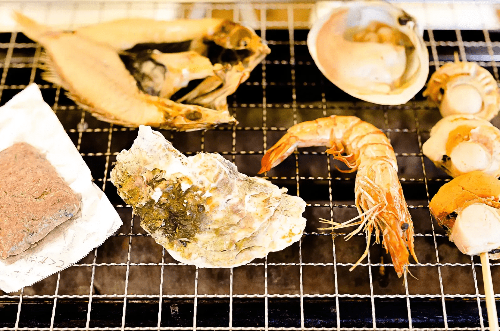

豊かな海の幸を満喫
福島の海の豊かさと甦った漁業、地域経済の復興
小名浜港1号埠頭地区に位置する、いわき市観光物産センター「いわき・ら・ら・ミュウ」。アクアマリンパークの中にあり、美しい海の景色を楽しみながら、この地の豊かな海産物を満喫できるスポットです。
いわき・ら・ら・ミュウ
津波被害から、港とともに復興
漁船から貨物船、クルーズ船まで停泊する小名浜港は、地域経済における物流、工業、漁業、観光の拠点です。その小名浜港に1997年にオープン。人気の海鮮の小売り市場、レストランや土産物店などが揃う一大観光施設です。 しかし、2011年3月、港に押し寄せた津波で、海鮮の小売り市場を含む1階部分はすべて浸水し、壊滅状態となってしまいます。復旧・再開したのは津波から8か月半後の11月下旬でした。 再開に至るまでの間には、被災地における子どものための室内遊び場「わんぱくひろば みゅうみゅう」を設置するなど、地域に貢献。ボールプールなどの遊具が設置された広い空間は、親子が集う安心の遊び場となり、現在も人々に親しまれています。 また、2階の「ライブいわきミュウじあむ」では、震災当時の状況やそこからの復興の様子を展示パネルや映像を通じて発信しています。
併設のバーベキューエリアでは、常磐ものといわきの郷土料理を楽しめる。
親潮と黒潮がもたらす豊かな海鮮を味わう
東京・豊洲市場の水産関係者の間でも「常磐もの」として知られ、品質の良さで名高い地元の海産物。春にはシラス、夏はスズキとカツオ、秋のヒラメにサンマ、冬はアンコウとメヒカリなど、様々な魚が水揚げされます。そうした海鮮をダイナミックに楽しめるのがバーベキューゾーン「バーベキュー番屋」。「ウニの貝焼き」や「サンマのポーポー焼き」といったいわき市の郷土料理も人気です。 キラキラと輝く海と、いわき市の市鳥であるカモメの愛称「ミュウ」から取られた施設名称のごとく、今、港はより一層輝き、力強く飛翔しています。